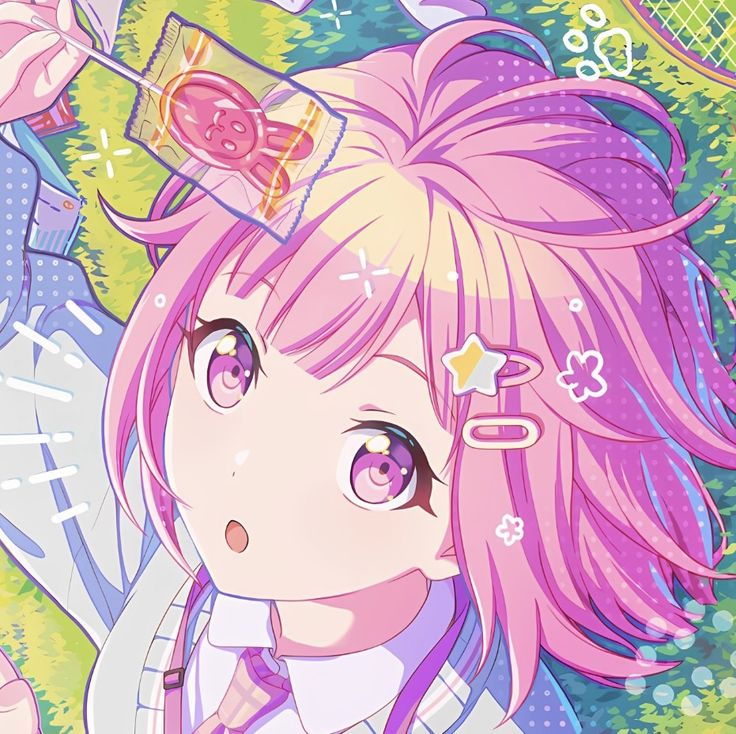
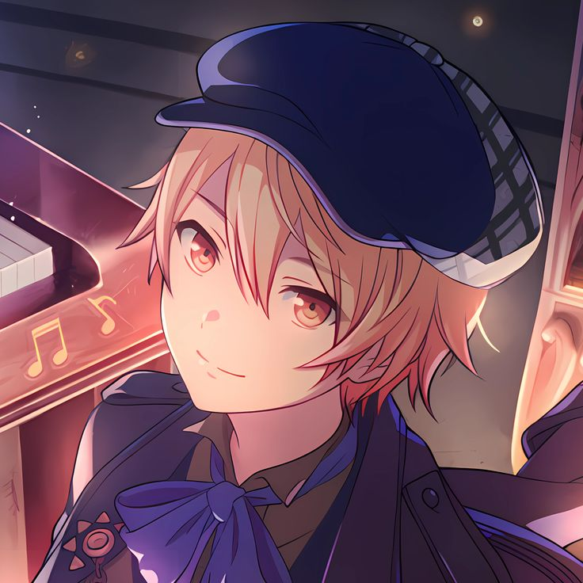
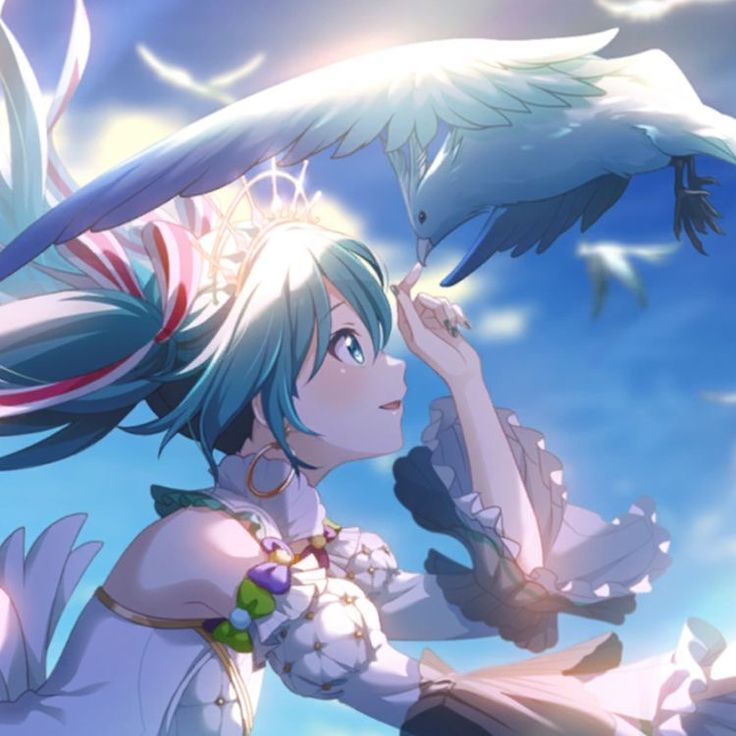
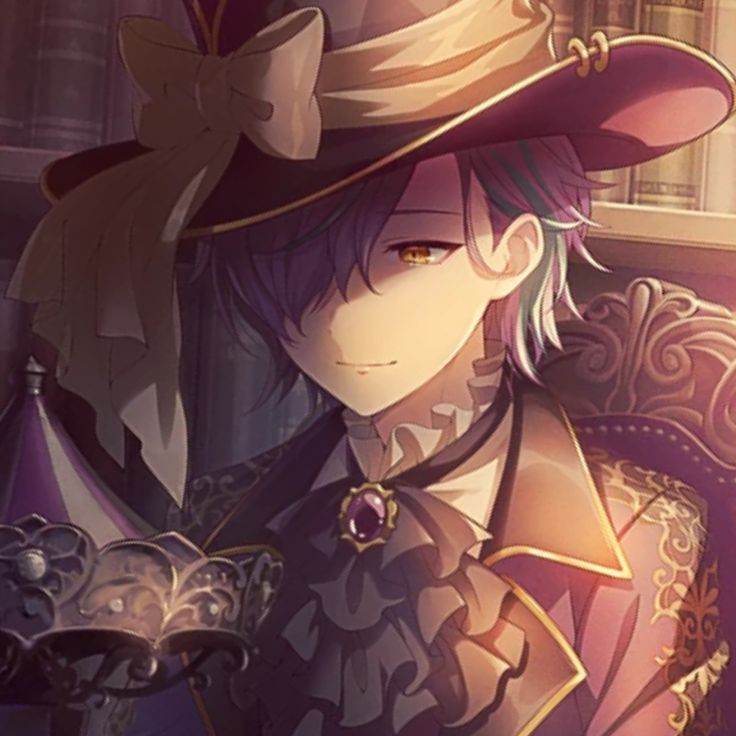
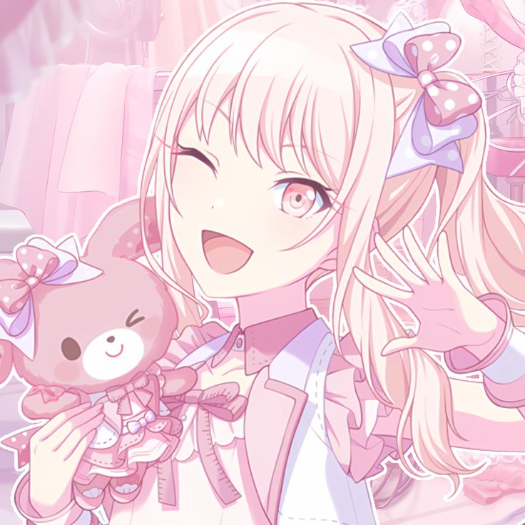

| Character | Info | Stuff I Like About Them |
|---|---|---|
|  Emu Otori ˎˊ˗ | "Otori Emu (鳳えむ) is a second-year student at Miyamasuzaka Girls Academy. She is a member of the musical show unit Wonderlands x Showtime." -fandom.com |
⭑ Energetic Attitude ⭑ Pink Aesthetic ⭑ Optimism ⭑ There's a slight bias since she was one of my favorites when I beginning HM:CS |
|  Tsukasa Tenma ˎˊ˗ | "Tenma Tsukasa (天馬司) is a third-year student at Kamiyama High School. He is a member of the musical show unit Wonderlands x Showtime." -fandom.com |
⭑ Wants to be a star ⭑ Cheery Atittude ⭑ Optimism ⭑ There's a slight bias since he was also one of my favorites when I beginning |
|  Hatsune Miku ˎˊ˗ | "Hatsune Miku (初音ミク) is a VIRTUAL SINGER. She assists all existing units." -fandom.com |
⭑ It's Hatsune Miku ⭑ Another Childhood Favorite |
|  Rui Kamishiro ˎˊ˗ | "Kamishiro Rui (神代類) is a third-year student at Kamiyama High School. He is a member of the musical show unit Wonderlands x Showtime." -fandom.com |
⭑ His mouth shape (It's the colon three emoticon) ⭑ Personality and Lore ⭑ I may be bias again |
|  Mizuki Akiyama ˎˊ˗ | "Akiyama Mizuki (暁山瑞希) is a second year student at Kamiyama High School. They are the animator of the underground music circle 25-ji, Nightcord de., going by the alias "Amia"." -fandom.com |
⭑ Pink Aesthetic ⭑ Cheery Attitude ⭑ Lore |